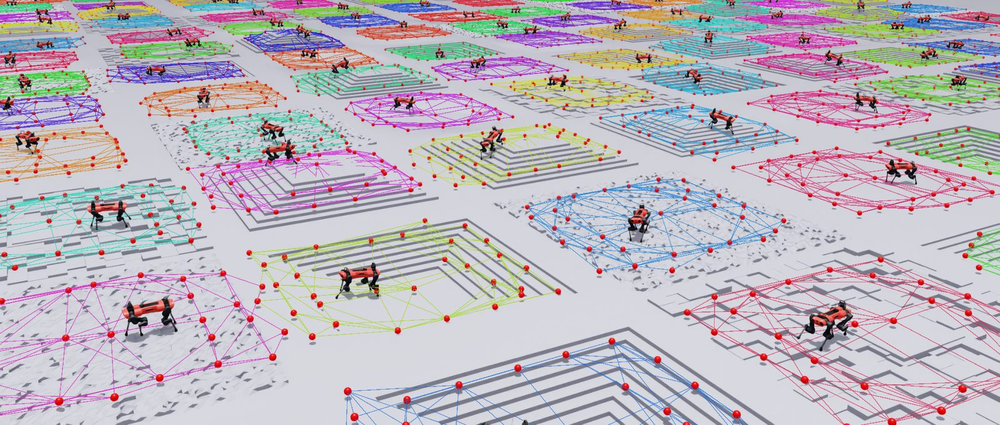

200 robots training in parallel in Isaac Sim
arXiv 2026
Submitted to ICRA 2027
First author
GGraph: A GPU-Accelerated Library for Graph-Based Robot Deployment and Learning
Navigation graphs underpin both classical exploration planners and a growing class of RL policies, but RL needs hundreds of parallel environments, each growing its own graph, and CPU graph builders cap training at a few dozen. GGraph stores each graph as parallel GPU tensors with stable node identities, so sampling, merging, pruning, shortest paths, frontiers and loop-closure correction are all single vectorized operations. The same code runs one robot over ROS 2 or a thousand robots in simulation.
- Batched graph builder: one nearest-neighbor merge and one line-of-sight kernel per step, with graph search as edge-parallel Bellman–Ford
- Layer system for frontier, semantic and learned per-node attributes
- PPO graph-attention exploration policies trained in about 1.5 h, deployed zero-shot on a Boston Dynamics Spot